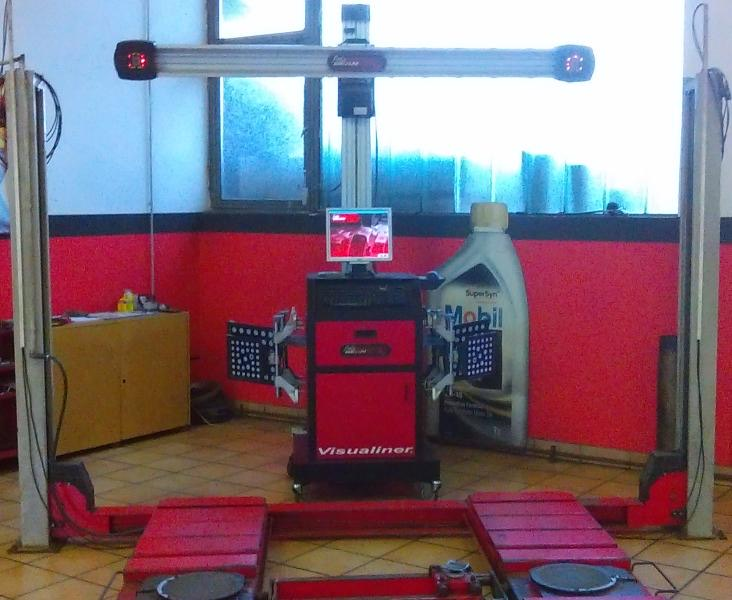
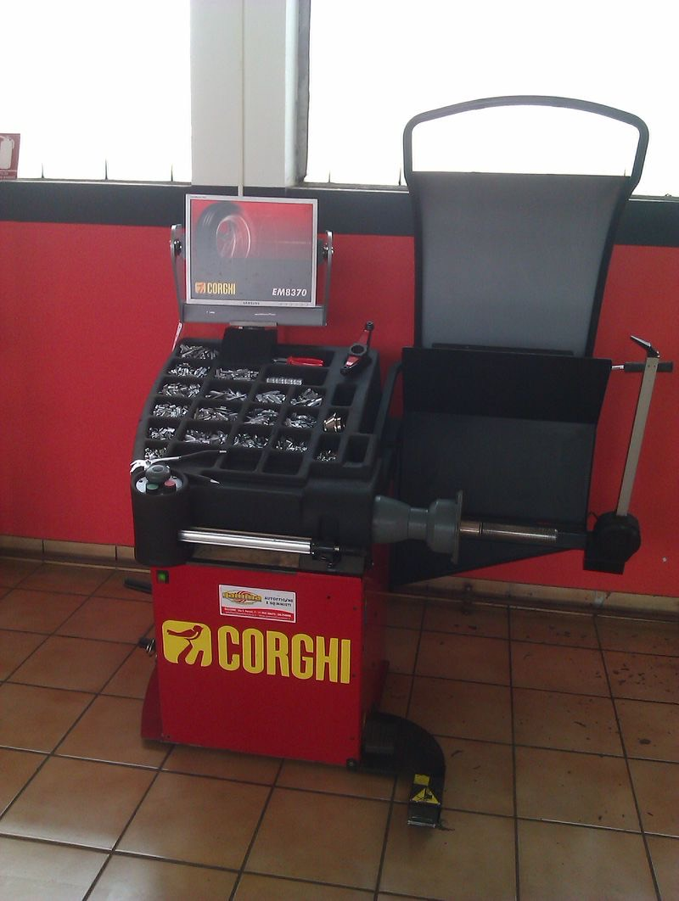

Sve štodrži autona cesti.
Geometrija kotača, gume, motorna ulja, ovjes, upravljanje i kočnice. Autodijelove raznih marki i proizvođača nabavljamo i ugrađujemo po povoljnim cijenama.
Geometrija
(špur) kotača
Centriranje ovjesa na 3D uređaju. Gume vam se troše neravnomjerno? Automobil vam je nestabilan?
Geometriju treba provjeriti nakon izmjene zglobova, amortizera ili letve volana te kod promjene guma. Preporuka je jednom godišnje.




Gume:
prodaja, montaža,
balansiranje
Više marki poznatih proizvođača guma za osobna, kombi i terenska vozila, u raznim dimenzijama.
Ulje kupite kod nas,
izmjena je besplatna
Kupite li ulje kod nas, besplatno mijenjamo motorno ulje i uljni filter. Dio ponude je ispod, a za trenutačnu ponudu i cijene nazovite.
Mobil
- Super 2000 10W40
- Super 3000 5W40
Shell
- Helix Ultra 5W40
- Helix HX7 10W40
Castrol
- Magnatec C3 5W40
- Edge 5W30
Total
- Quartz 7000 10W40
- Quartz 9000 5W40
Elf
- Evolution 900 5W40
- Evolution 700 10W40
Besplatna izmjena ulja i filtera ulja
047 638 321Izmjena dijelova
Autodijelove raznih marki i proizvođača nabavljamo i ugrađujemo.
Upravljanje
- Letve volana
- Krajnici i spone
- Kugle, ramena i vilice
Nešto vam lupa u vožnji? Okrećete volan, a auto to kasno primjećuje?
Kotači
- Ležajevi kotača
- Rukavci
- Glavčine
Primjećujete šum i brujanje kojeg prije nije bilo?
Kočnice
- Kočioni diskovi i pločice
- Kočioni cilindri
- Sajle ručne kočnice
Automobil se zanosi prilikom kočenja? Ručna je zategnuta, a auto se miče?
Amortizeri i opruge
- Amortizeri i opruge
- Ležajevi amortizera
- Seleni
Auto se previše ljulja i zanosi u zavojima? I male neravnine čine se puno većima?
Visina vozila
- Spuštanje vozila
- Podizanje vozila
Želite da auto bolje izgleda i bude stabilniji, ili da može i van ceste ako zatreba?
Pogon
- Homokinetički zglobovi
- Manžete
- Poluosovine
Čujete pucketanje u punom skretanju? Mastan vam je naplatak?
Kako radi ovjes
Podvozje možemo podijeliti u nekoliko osnovnih dijelova: opruge i amortizere, zglobove (krajnike, kugle, vilice) i kočnice.
Opruge (federi) određuju visinu vozila, odnosno udaljenost karoserije od podloge, a amortizeri ublažavaju okomito gibanje i sprečavaju stalno ljuljanje automobila. Standardne opruge i amortizeri udobniji su u vožnji od sportskih (gewinde), dok sportski daju bolju stabilnost, ali puno više opterećuju zglobove.
Upravljanje bez zglobova ne bi bilo moguće. Okretanjem volana prvo se djeluje na letvu volana, letva gura spone i krajnike vezane za rukavce, a rukavci su vezani za kugle, vilice ili ramena, ovisno o izvedbi. Ispravni zglobovi utječu na kvalitetu i sigurnost vožnje.
O sigurnosti nema govora bez ispravnih kočnica. Razlikujemo disk i bubanj kočnice: dugo su se diskovi ugrađivali naprijed, a bubnjevi straga, dok danas većina boljih vozila ima diskove na svim kotačima. ABS ne dopušta blokiranje kotača i najučinkovitiji je na asfaltu, suhom ili mokrom, a slabiji na snijegu i ledu.
Položaj kotača definiraju trag, nagib i zatur. Pravilno podešena geometrija osigurava stabilnost i upravljivost, a gume se ne troše neravnomjerno, pa im se produljuje vijek.